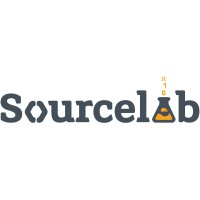
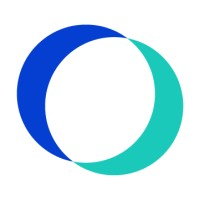

EXECUTIVE SUMMARY
Quality Assurance Specialist with 10+ years helping software teams build better products through early testing integration.
Experienced in E2E, integration, and API automation using Playwright, Cypress, Selenium, Python, JavaScript/TypeScript, and C#.
Passionate about process optimization, task automation, and exploring AI-powered solutions to enhance quality assurance.
Enjoys mentoring colleagues and making testing engaging. Constantly learning and sharing insights about software quality and artificial intelligence.
TECHNICAL SKILLS
- Languages: TypeScript/JavaScript, Python, C#, C/C++, PHP, Ruby, Bash
- Automation: Playwright, Cypress, Selenium, Codeception, Postman, Cucumber/Gherkin
- Databases: MongoDB, MySQL, Microsoft SQL Server, PostgreSQL, Oracle DB
- DevOps & Tools: Docker, Vagrant, VM, Unix/Linux, Git
- Methodologies & Platforms: Agile, Jira/Zephyr, Azure
PROFESSIONAL EXPERIENCE

Aug 2022 - Present
SOURCELAB
Senior Quality Assurance Engineer
- Design, implement, and review test scenarios and test cases (functional, non-functional)
- Develop and maintain API automation tests using Postman and JavaScript
- Participate in regression testing efforts
- Collaborate with team members of all roles to identify and resolve quality issues
- Apply expertise in both frontend and backend testing methodologies
- Contribute to continuous improvement of QA processes and standards

Dec 2020 - Aug 2022
OfficeRnD
Senior Quality Assurance Engineer
- Created API and UI automated tests using Mocha, Cypress, and JavaScript
- Tested reports and analytics
- Collaborated with PM and development team to write acceptance criteria
- Managed release process
- Mentored peers and participated in knowledge sharing sessions
- Participated in process improvement discussions
- Conducted candidate interviews
 Jul 2019 - Dec 2020
Jul 2019 - Dec 2020
Design Technologies (formerly Clippings)
Senior Quality Assurance Engineer
- Worked closely with Product Owner and other stakeholders to refine initial requirements
- Actively participated in the introduction and development of the testing process
- Facilitated team's transition to Agile methodology and promoted an Agile company culture
- Designed and executed manual test cases
- Automated key features using Codeception/PHP (acceptance and API tests)
Feb 2019 - Jul 2019
Fourth
Senior Quality Assurance Engineer
- Analyzed requirements and designed test cases
- Developed front-end automation tests for Web, Android and iOS applications using Selenium WebDriver, Appium and C#
- Executed manual functional tests as well as regression tests
- Deployed to testing and production environments
- Conducted code reviews for Ember.js and C# implementations
- Actively participated in all Scrum ceremonies (daily standup, sprint retrospective, grooming sessions, sprint planning)
Nov 2013 - Feb 2019
Wiser Technology (formerly Bianor)
Senior Quality Assurance Engineer
- Worked on Linux-based project utilizing Tomcat, nginx and PostgreSQL at the backend and Angular.js, Ext.js and Flex (legacy) on the frontend
- Analyzed high level requirements and designed test cases
- Developed API automated tests using multiple approaches: bash/curl/Ruby/psql testbed and SoapUI/Groovy testbed
- Executed manual functional and performance tests
- Analyzed field issues and performance problems
- Participated daily in Scrum and retrospective meetings, triaged tickets
- Reviewed user stories and test cases
- Conducted candidate interviews
- Mentored new colleagues
Feb 2004 - Nov 2013
BATM Network (formerly Telco Systems)
Software Developer
- Designed, implemented and supported Circuit Emulation Services Project (CES)
- Designed, implemented and supported SSH, SFTP, SCP client and server
- Designed, implemented and supported various networking protocols
- Participated in implementation and optimization of various algorithms related to networking
- Wrote High Level Design and Low Level Design Documents and maintained detailed documentation
- Maintained constant communication with all persons involved in projects via email and phone
- Participated in weekly conference meetings with project manager and QA, discussing current project status, open issues, and future activities
EDUCATION
1999 - 2003
American University in Bulgaria (AUBG)
Bachelor of Science, Computer Science
1995 - 1999
Math and Science High School - Lovech
High School Diploma, English Language/Mathematics